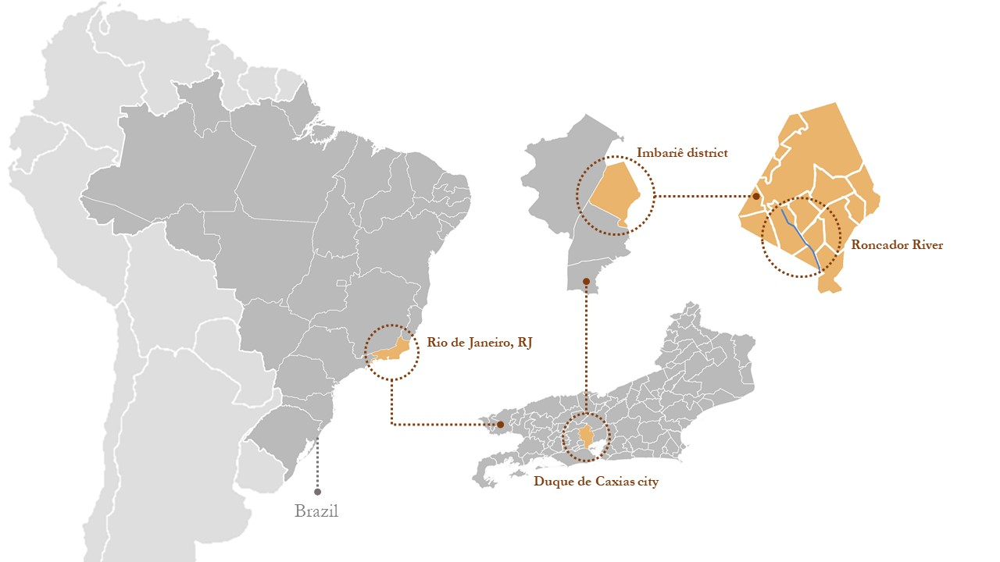
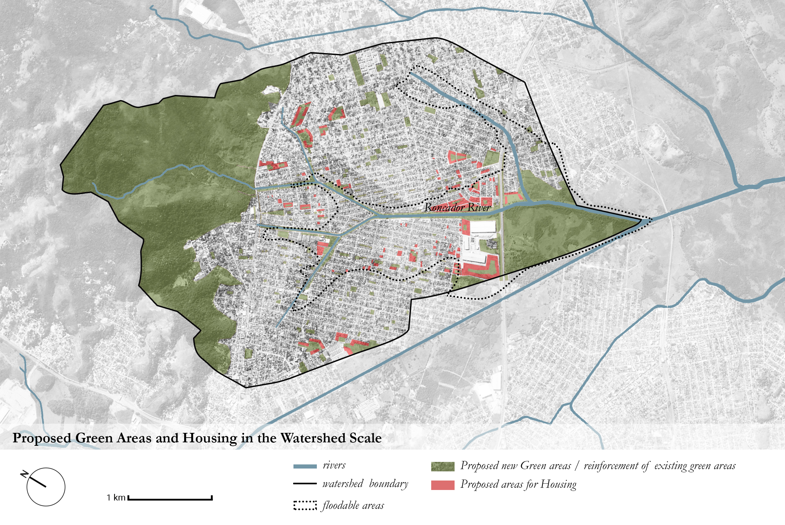
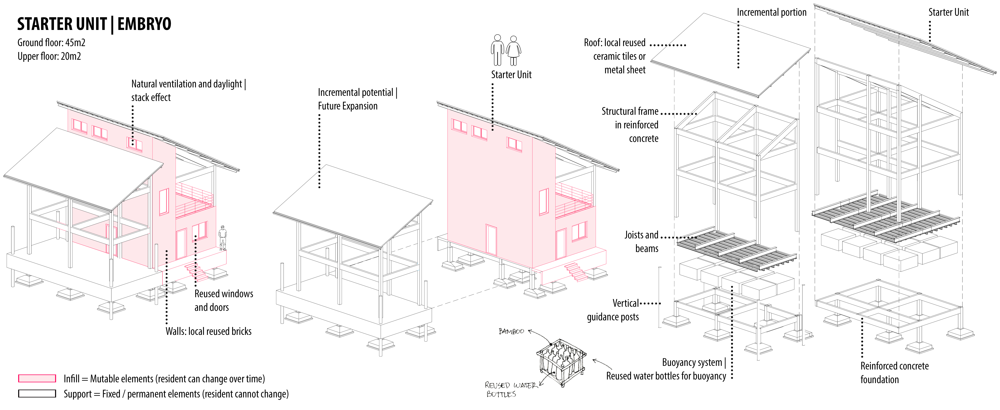
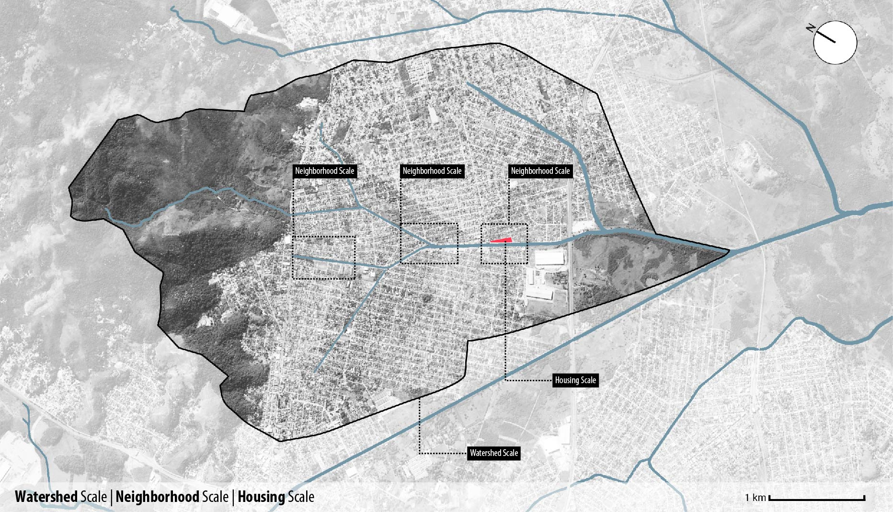
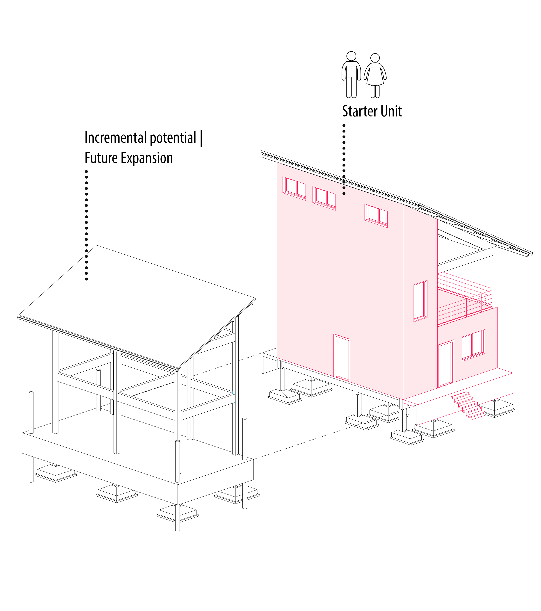
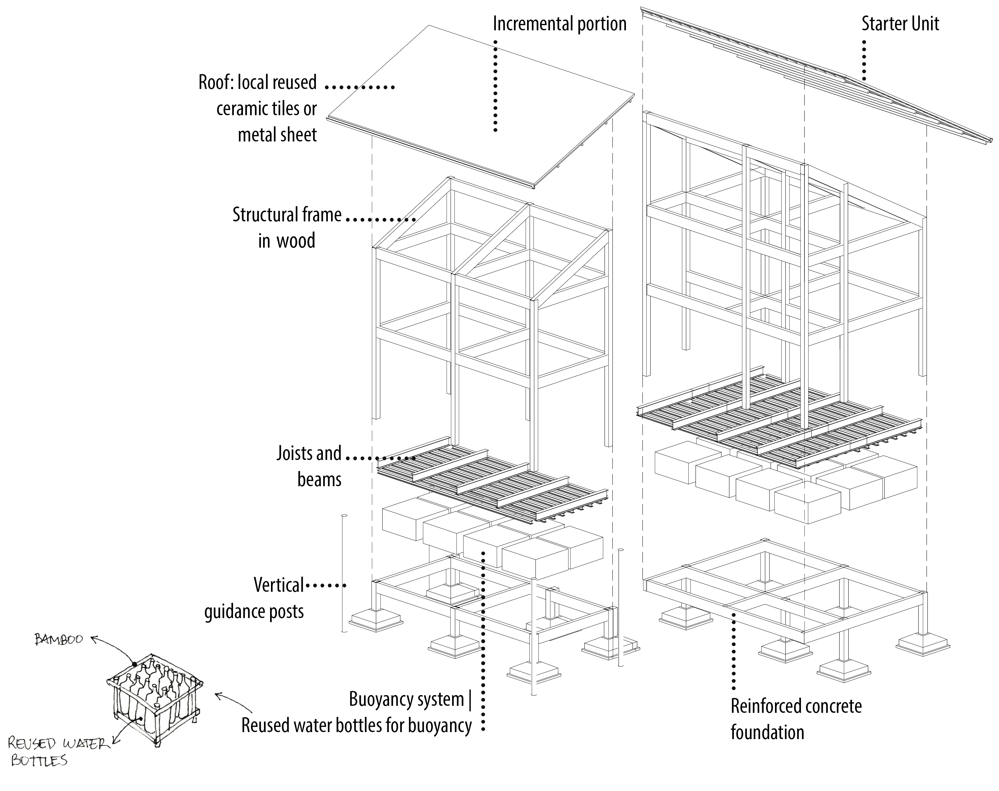

Academic · 2022
WaterWoven
A master plan for flood-resilient, evolutionary amphibious housing and green infrastructure in the Roncador River region.
- Location: Duque de Caxias, Rio de Janeiro, Brazil
- Timeline: 2021-2022
- Role: Thesis research, master planning, flood-resilient housing design, diagrams, sections, and community strategy.
Informal settlements on riverbanks in impoverished Brazilian peripheries have been increasingly suffering from more intense annual urban floods, as in the Roncador River region in Duque de Caxias city. In a degraded urban watershed precariously inhabited by informal settlements, which design strategies would enhance the community's adaptive capacity to floods and allow them to safely stay, grow, and thrive in the long term?
This work proposes a comprehensive solution for flood risk reduction through an integrated approach in design. By recognizing water as an ally, this design proposal aims at building an affordable, flood-resilient, and evolutionary community. It connects a system of green areas along the river corridor and within the urban fabric with amphibious evolutionary housing. As a low-impact intervention, it prioritizes nature-based strategies and local community practices, fostering local economies to fight gentrification and contributing to building a more equitable future. The project's innovation is combining incremental design strategies with the "amphibiation" technique to offer good quality and affordable housing that adapts to floods, empowering marginalized communities to thrive in healthier riverscapes.
The innovation in the housing scale consists of combining incremental housing design strategies with the amphibious architecture technique with buoyant foundations. A flexible housing design offers the residents agency to address their needs and aspirations according to their stage of life, family size, and budget limitations. Two housing types are proposed in the Roncador river's expansion zone: a single-family housing type for smaller sites and a multi-family low-rise building for larger sites.














Related projects
Explore adjacent work

Denver's Missing Middle
An evolutionary mixed-income townhouse community for Denver's Globeville neighborhood, designed around modular bays, live/work options, and shared outdoor amenities.

Biomorphosis
A nature-based Mechanics Institute on the Grand River that integrates blue-green infrastructure with circular building systems.

Waterloo Centerpiece
A high-density mixed-use district with seven buildings, thirteen towers, pedestrian-oriented streets, green spaces, and transit connectivity.